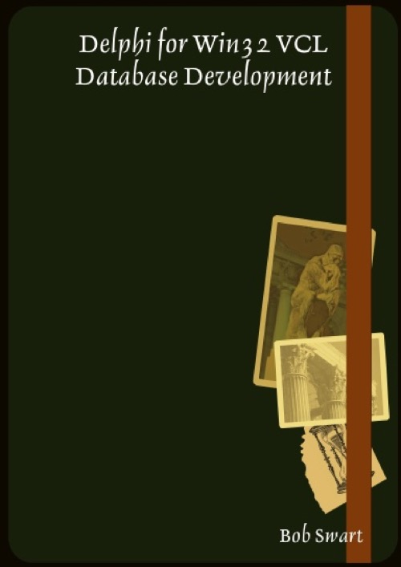

Delphi for Win32 VCL Database Development
Published by : Lulu
Writed by : Bob Swart
Published date : 03/03/2008
Language :  English
English
About Delphi for Win32 VCL Database Development
In this paperback about Database Development with Delphi, I'll cover the Borland Database Engine, dbGo for ADO, dbExpress and TClientDataSet. I'm using Paradox, MyBase and SQL Server for the example application, which is built for each data access technology, including data conversion and migration.
Finally, for Delphi 2007 developers, I've added a special introduction section on DBX4 and the new features in this latest release of the dbExpress data access framework. Plus coverage of Blackfish SQL usage.
The appendices discuss the Decision Cube (still useful) and using .ini files as data storage.
The information in this paperback can be used with all versions of Delphi, although ADO needs Delphi 5 or higher, dbExpress needs Delphi 6 or higher, DBX4 is only part of Delphi 2007 (or higher), and Blackfish SQL came with Delphi 2007 for Win32 R2 and CodeGear RAD Studio.
Finally, for Delphi 2007 developers, I've added a special introduction section on DBX4 and the new features in this latest release of the dbExpress data access framework. Plus coverage of Blackfish SQL usage.
The appendices discuss the Decision Cube (still useful) and using .ini files as data storage.
The information in this paperback can be used with all versions of Delphi, although ADO needs Delphi 5 or higher, dbExpress needs Delphi 6 or higher, DBX4 is only part of Delphi 2007 (or higher), and Blackfish SQL came with Delphi 2007 for Win32 R2 and CodeGear RAD Studio.
Where to buy ?
If this book is still available for sale, you probably can order it on its website.